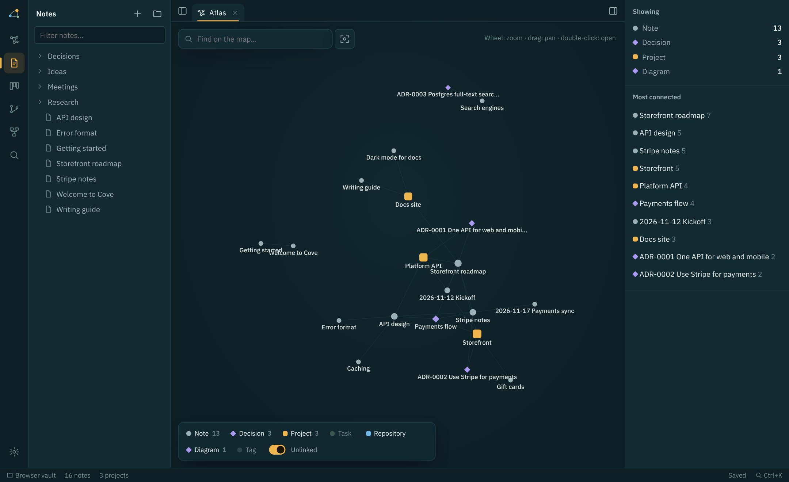
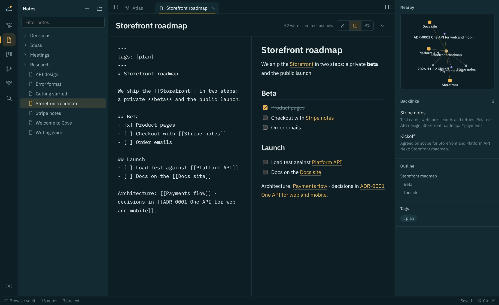
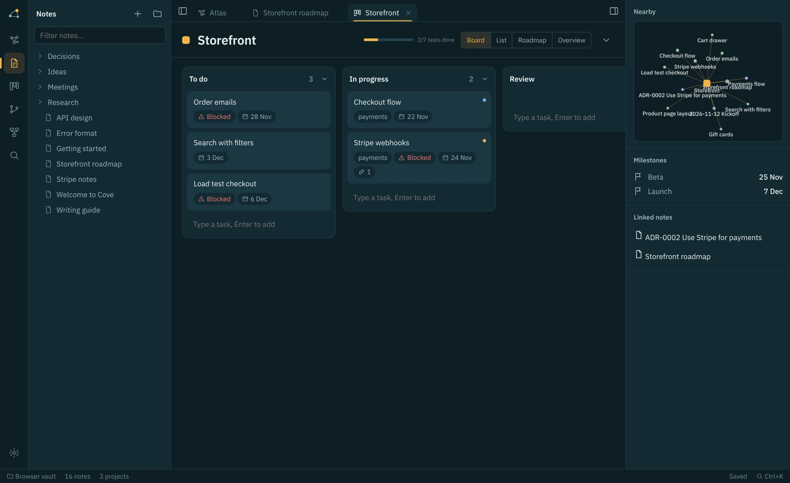
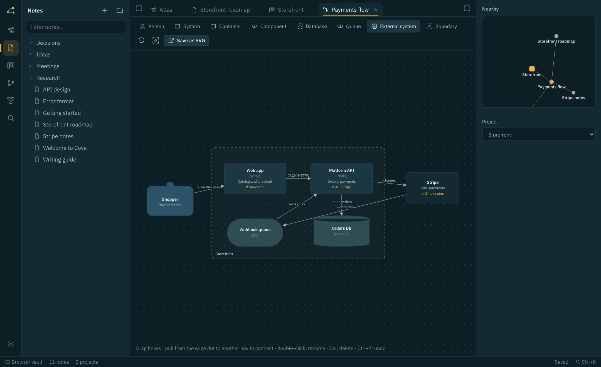

Cove; bağlantılı notları, proje planlamayı, Git depolarını ve mimari kararları bir araya getirir ve aralarındaki bağları gösterir. Notların bilgisayarındaki düz Markdown dosyalarıdır.
Cove brings linked notes, project planning, Git repositories and architecture decisions together and shows how they connect. Your notes are plain Markdown files on your computer.

Her şey birbirine bağlanır: bir notta bir projeyi, depoyu ya da diyagramı [[adıyla]] anman yeter.
Everything links up: mention a project, repository or diagram as [[its name]] in any note.
Otomatik tamamlamalı bağlantılar, geri bağlantılar, ana hat, yerel grafik, etiketler ve günlük not. Bir notun adını değiştirince ona giden bütün bağlantılar güncellenir.
Links with autocomplete, backlinks, outline, a local graph, tags and daily notes. Rename a note and every link to it follows.

Sürükle-bırak pano, liste, genel bakış ve kilometre taşlı yol haritası. Görevler birbirine bağımlı olabilir; Cove döngüye izin vermez ve engellenen işleri gösterir.
A drag-and-drop board, a list, an overview and a roadmap with milestones. Tasks can depend on each other; Cove refuses loops and flags blocked work.

Kutuları notlara ve projelere bağlanan C4 tarzı diyagramlar, durumlu karar kayıtları (ADR) ve bir deponun import grafiğini çizip döngüleri bulan kod haritası.
C4-style diagrams whose boxes link to notes and projects, decision records (ADRs) with a status, and a code map that draws a repository's imports and finds cycles.

Yerel Git depolarının durumu, dalları ve commit grafiği. Sağlık kontrolü eksik README, lisans, .gitignore, CI ve testleri bulur; tek tıkla şablon ekler. Token eklersen GitHub issue ve PR'ları da gelir.
Status, branches and the commit graph of local Git repositories. A health check finds a missing README, license, .gitignore, CI or tests and adds a template in one click. Add a token to see GitHub issues and pull requests.
Güncelleme kendiliğinden gelir. İlk açılışta notların, günlüğün, projelerin ve yapılacakların Cove 2 klasörüne aktarılır; eski verin değiştirilmez. 2.x'te şifreleme açıksa önce onu kapat.
The update arrives on its own. On first start your notes, journal, projects and to-dos are imported into a Cove 2 folder; your old data is not changed. If encryption is on in 2.x, turn it off first.
Cove'un tek resmi kaynağı bu sayfa ve github.com/rumetsasmaz/cove-releases. İndirdiğin dosyanın değiştirilmediğini SHA-256 koduyla doğrula:
The only official sources are this page and github.com/rumetsasmaz/cove-releases. Check that your download is unchanged with its SHA-256:
244a526ce095fec1017dbcf2eb85cf1ff8f14cb99c08dffce5b8bbaaffc5c782PowerShell'de Get-FileHash .\Cove-Setup.exe çalıştır; çıkan kod yukarıdakiyle aynı olmalı.
Run Get-FileHash .\Cove-Setup.exe in PowerShell; the result must match the code above.